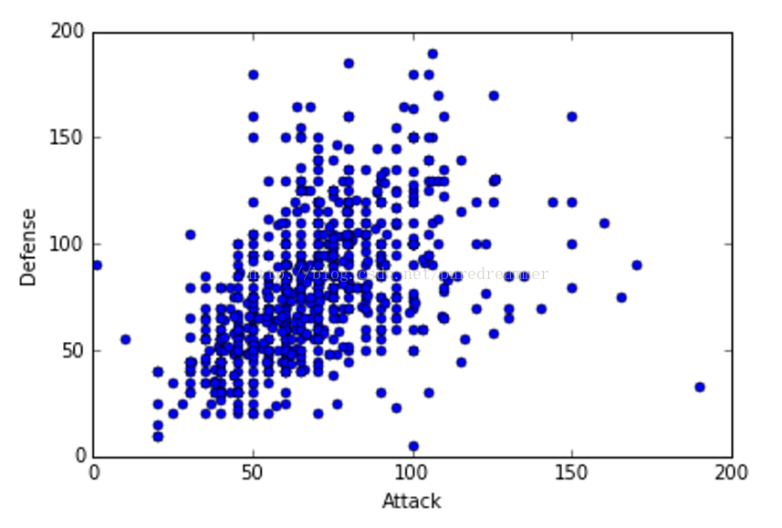
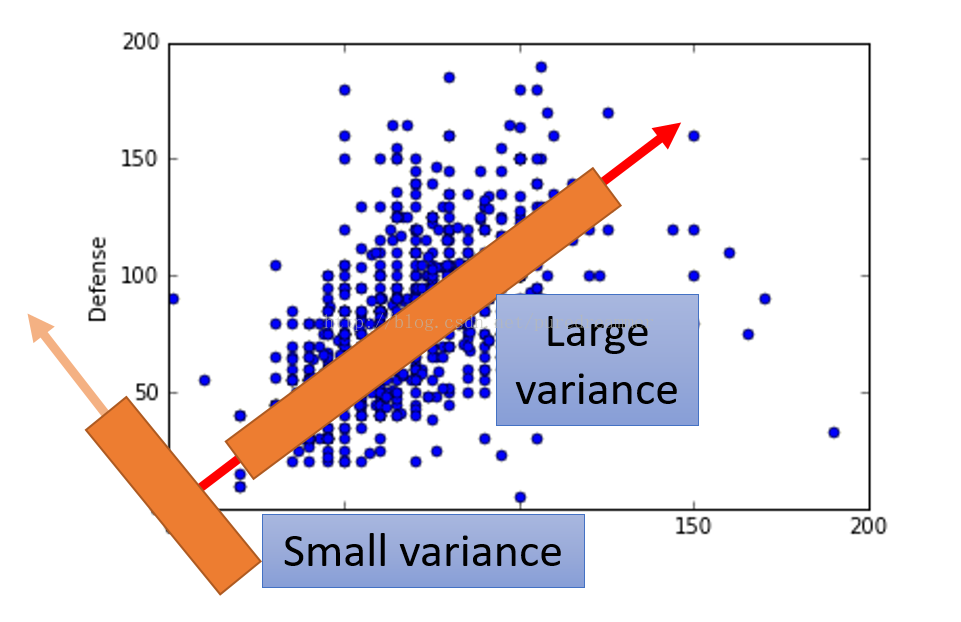

在 python 的 sklearn 的库里面集成很多机器学习算法的库，其中也包括主成分分析的方法。
1.PCA算法的原理:
PCA主要是用来数据降维，将高纬度的特征映射到低维度的特征，加快机器学习的速度。比如在三维空间里面有一个薄饼状的三维物体，由于薄饼的厚度相对于薄饼的直径要小很多很多，故我们在平时的时候就说这个薄饼是圆的，而不说它的是圆柱的，这就是无意识中把描述薄饼的特征从三维降到二维了。（由于学识疏浅，这个例子可能不是特别恰当，还请谅解）。
下面看这个图片（该图片来自台湾大学李宏毅老师的ppt）：

在这个图片中，我们用两个特征，一个是attack，一个是defense来描述样本。但是如下图所示，我们作了两条线，可以看出在右边这条线上有较大的方差，而左边这条线的方差比较小，我们知道，方差越大，所包含的信息就越多。那么如何把这两个特征进行降维呢，降维要尽可能保持原始数据的信息，故要取使方差最大的一个维度（本例中从二维降到一维）。假设右边这条线的方差最大，我们就可以把这条线所在的直线当作降维后的一个维度。也就是二维降到一维后，这个一维空间的x轴所在的位置。那么这个降维后的x轴代表着什么呢？在本例中，我们可以看到这个新的特征由defense和attack这两个特征向量相加，新特征的含义我个人理解为防御力和攻击力在差不多的情况下的大小。不同的人可能理解不一样，现在就成功的将这个二个特征降到了一个特征。在实际的情况中可能有成千上万维数据，具体降到多少个特征要根据实际情况而定。一般来说，前几个特征的累计贡献率就可能达到百分之九十几了。

2.在python里面使用pca算法：
首先要导入库：
from sklearn.decomposition import PCA
下面是官网上的例子：
>>> X = np.array([[-1, -1], [-2, -1], [-3, -2], [1, 1], [2, 1], [3, 2]])
>>> pca = PCA(n_components=2)
>>> pca.fit(X)
PCA(copy=True, n_components=2, whiten=False)
>>> print(pca.explained_variance_ratio_)
[ 0.99244... 0.00755...]
先创建一个PCA对象，其中参数n_components表示保留的特征数，默认为1。如果设置成‘mle’,那么会自动确定保留的特征数
最后显示的 参数 explained_variance_ratio_：array, [n_components]返回 所保留的n个成分各自的方差百分比,这里可以理解为单个变量方差贡献率，可以看到第一个特征的单个变量方差贡献率已经到达0.99,意味着几乎保留了所有的信息。所以只保留一个特征即可.
>>> import numpy as np
>>> from sklearn.decomposition import PCA
>>> X = np.array([[-1, -1], [-2, -1], [-3, -2], [1, 1], [2, 1], [3, 2]])
>>> pca = PCA(n_components='mle')
>>> pca.fit(X)
# PCA(copy=True, n_components=2, whiten=False)
>>> print(pca.explained_variance_ratio_)
[ 0.99244291]
现在我们将n_components设置成"mle",发现自动保留了一个特征。